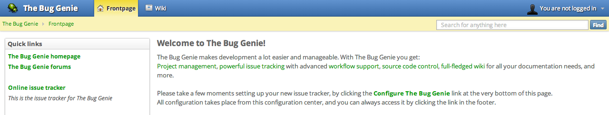
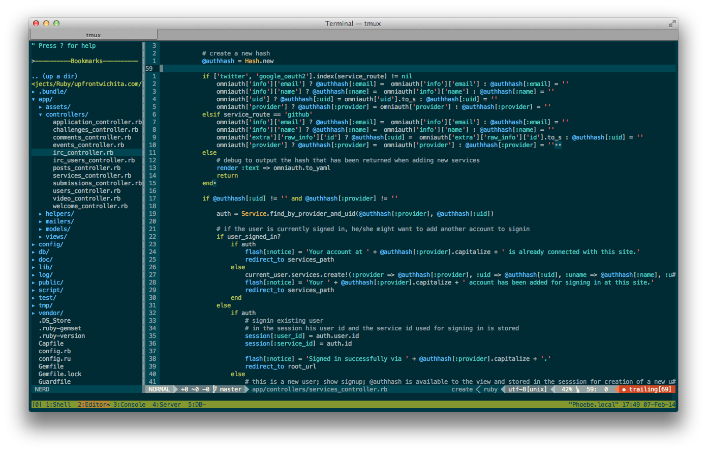
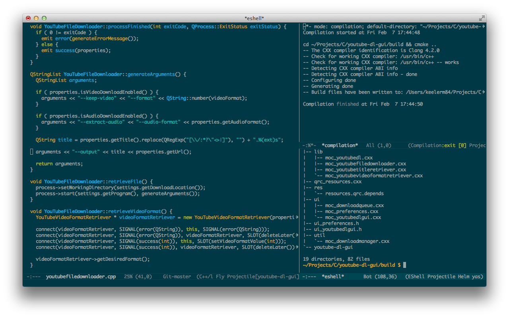
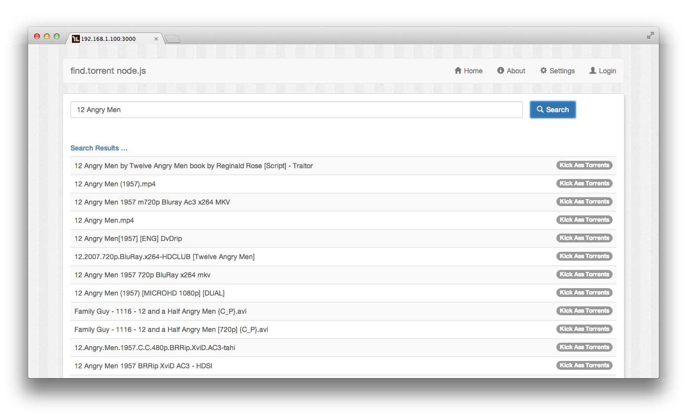
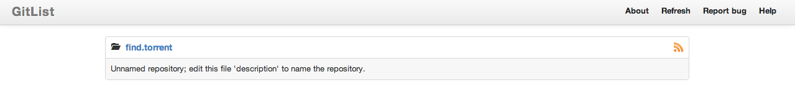
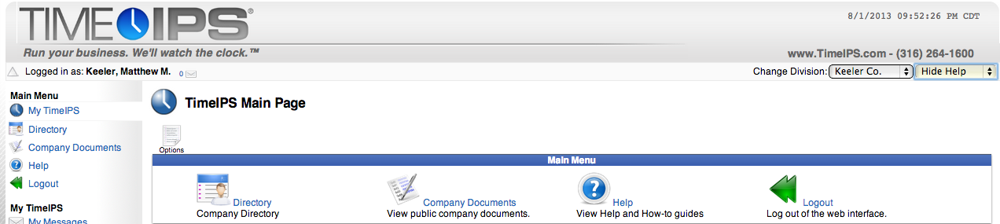
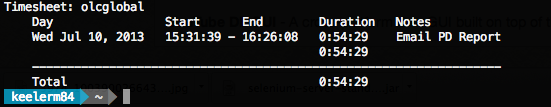
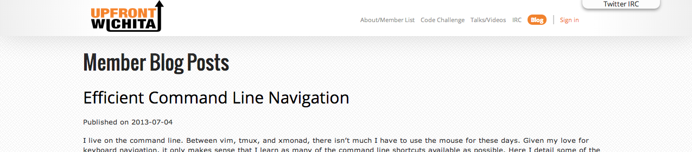
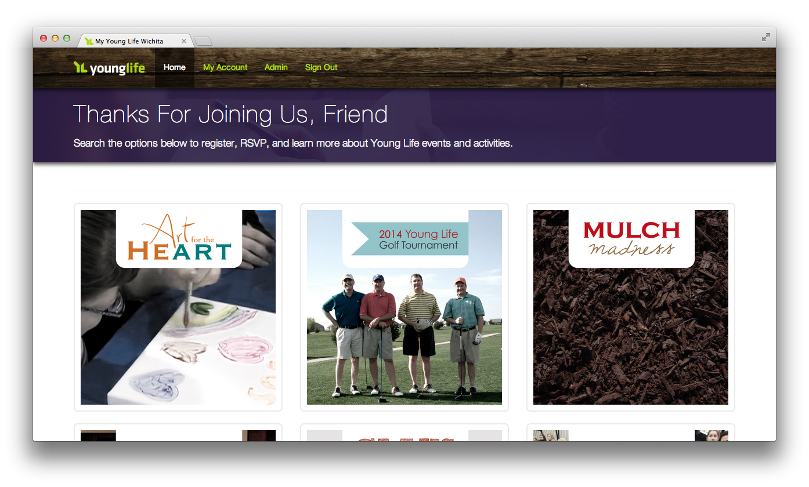
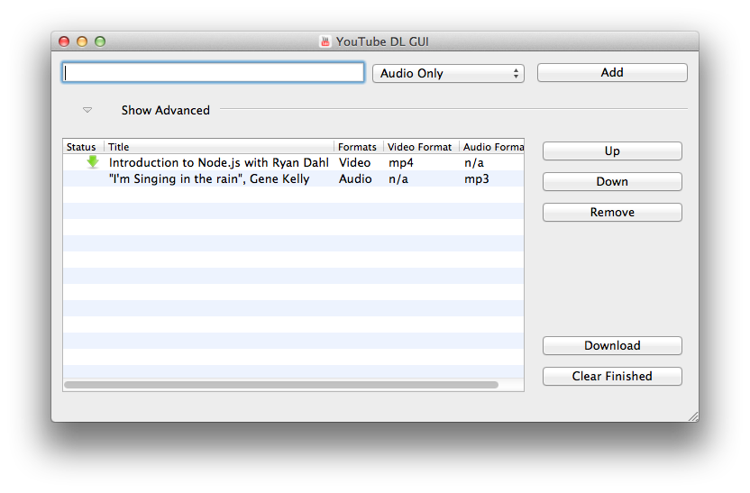

Below are some of the projects I have worked on. This includes personal
projects, open source contributions, and work done for various clients.
The languages used include, but are not limited to PHP, Ruby, C++ and
Node.js.

The BugGenie was the first open source project I contributed to.
It is an easy to use issue tracking / project management system,
written in PHP.
I have contributed various improvements, including fixing invalid
links on generated emails, inappropriate handling of various ajax
requests, and a variety of CSS based improvements.

What developer's github account would be complete without a
dotfiles repo?
My dotfiles repository is structured to work with homeshick, a bash
based management system for maintaing your .dotfiles. It includes
the configurations for the tools I use most often, such as vim,
tmux, zsh and irssi.

Developers love their editors. Typically, they love one to the
exclusion of all others. But this is definitely not the case with
me. In fact, you might say I have an editor addiction, having
played with vim, Sublime Text, Eclipse, Netbeans, and of course
emacs.
My emacs configuration includes elisp code to perform auto
installation and updating upon start up, as well as customizations
to various packages.
This API service was developed in collaboration with my business
partner Jacob Walker. It is
a PHP based REST application, written using the BulletPHP
framework, and using the HAL specification.
With this service, you can easily search for torrents from a
variety of sources and process one for downloading.

The find.torrent service is a fantastic project, but on its own, it
isn't very useful. There must be an application built to
manipulate it's API.
ft-nodejs is a node.js project built to do exactly this. Using
node.js, the jade templating engine, and socket.io, it providers a
simple, clean interface to search for torrents from a variety of
devices.
This is the first talk I presented to the UpFront Wichita
developers group. As an introduction to git, I cover the basics of
initializing a repository, staging commits, performing resets, and
how to use the different ignore strategies.
The second part of my git series addresses more of the concerns
when working on git in a team dynamic. Some of the topics covered
include merges, rebasing, log and blame, and how to perform a
bisect.

gitlist was built to be a modern web interface for multiple git
repositories, using some of the latest frameworks, including Silex
and Twig, with Twitter bootstrap for the design.
I have contributed a few patches to this project, such as better
handling for raw resource viewing and correcting paths to various
commit objects.
Based on OpenCart, NOW is an e-commerce site built for a client of
Tortugas Consulting. As well as acting as a catalog of products,
the site also interfaces with AvalarTax for tax generation, UPS for
generating shipping labels and requests, and Authorize.net for easy
payment.

The TimeIPS intelligent personnel system is a PHP web-based
application for automating time tracking and payroll calculations.
In addition to working on the PHP backend, I have also worked
extensively with the C++ embedded clocking device which performs
fingerprint biometric validation.
During my time, I also developed a cross-platform C++ QT
application to allow clocking from the desktop, and designed the
REST API used to communicate with the server.

timetrap is a simple Ruby based command line application to track
your time on various projects. This was the first Ruby project I
have contributed to, implementing features such as a filter for
viewing "todays" events, as well as a custom invoice generation
formatter built with LaTeX.

The UpFront Wichita group is a new developer community for Wichita,
Kansas. Originally conceived as a front-end developer group, it
has quickly expanded to encompass all things technology related.
Our website is built using Ruby on Rails. I have contributed
numerous features, such as OAuth based sign in, and aggregation for
videos of the talks, as well as a list of member blog posts from
different RSS feeds.

YoungLife Wichita hosts a variety of activites and events for
guests of all ages.
Built from scratch, this site is implemented in Rails 4 and
includes automated backup, deployment, a fully functional
administrative section and more.

The wildly popular youtube-dl python script is an excellent tool
for downloading and converting YouTube videos. While it is an
awesome tool, it isn't the most user friendly tool for some people.
To make using it easier for my wife, I developed a cross-platform
C++ QT GUI that drives the command line utility. Files can be
downloaded as video only, audio only, or as both, and automatically
converted into a variety of formats.
Projectile is a project interaction library for Emacs. Its goal is to
provide a nice set of features operating on a project level without
introducing external dependencies(when feasible).
I added some defadvice to the delete-file functionality that would
remove the file from the cache automatically, preventing the user from
having to manually invalidate everything in order to clean up the file
list.
buster-mode is a minor mode for emacs to speed up development when
writing tests with Buster.js.
My contributed was limited to a minor code improvement that replaced an
unnecessary loop with a better built-in mechanism.
Emacs integration for gist.github.com
Fixed two long outstanding bugs; one was related to errors being
generated when trying to add buffers associated with persisted files
and the other was with private gists being reverted to public access.
Functions to maintain a simple personal diary / journal in Emacs.
I have contributed a few little patches to this project including
fixing the ability to find previous journal entries with customized
formats, view-mode toggling on and off, cleaning up lingering debugging
statements and ensuring that the appropriate major modes were enabled
prior to referencing their functionality.
powerline has quickly become a favorite for command line lovers that
want to jazz up their environments. My contribution included adding a
segment that would show the number of users connected to the active
tmux session.
Built on top of
the php-refactoring-browser,
php-refactor-mode.el allows a user to quickly perform automated
refactorings from within emacs.
In the second half of this dual presentation, I talk about what I think
makes emacs a great editor. Covering various packages such as helm,
restclient and magit, it's a nice overview of the power of the The One
True Editor.